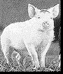
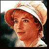
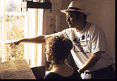
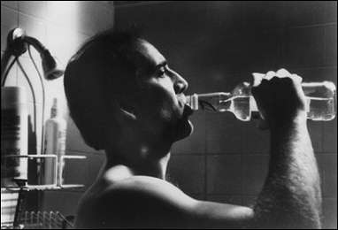
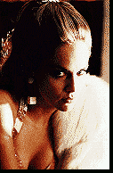
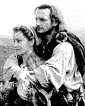
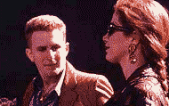

68th Oscars (1996)
feature by Carrie
Gorringe
Pigs on the Screen
There's only one word that adequately sums up the majority of this year's Oscar nominations: grim. True, the number of potential choices this year seemed unusually limited, but when a film about a talking pig can garner nine nominations, including Best Picture, no less, something is really lacking. All right, I admit that Babe himself is adorable, after a somewhat cloying fashion, and yes, I was upset when Babe's family was obliterated by the evil pork producers, but can anyone honestly - and I do mean honestly - believe that Babe represents the highest levels of narrative and visual achievement?
One might have thought that the nadir had been reached last year, when Forrest Gump won Best Picture, but the Academy offerings this year are particularly appalling, almost as if they dug a new level right out from underneath last year's lows.
With the overwhelming number of nominations from 'feel-good' pictures present and accounted for, one could be forgiven for believing that the motion picture industry is running scared in the face of growing calls for censorship from the so-called 'religious right' (which, as one wag once suggested about the 'moral majority', is neither) and the US Congress. Nevertheless, what follows are the nominees for the 68th annual Academy Awards in what are commonly referred to as the 'money' categories (so named because a win in any one of them can boost the total box-office receipts of a given film by as much as thirty percent).
So, I'll plug my nose and probably make a fool of myself in the process of trying to predict the voting trends present among some 5,600 Academy members...
Best Picture:
What should win: The best of the above, far and away, is Sense and Sensibility. It has everything: flawless acting, great direction and script adaptation. Best of all, it has a respected literary pedigree, something which the Academy tends to favour in its annual quest for 'respect' (otherwise known as covering over the yearly output of cinematic swill like Black Sheep with the elegant petticoats of Jane Austen).
What will win: The Academy has a tradition of selecting a film that represents the best of American filmmaking, but the best film of 1995 will probably be Sense and Sensibility, for many of the reasons listed above. S&S will also pick up some momentum from its Golden Globe win in the Best Picture category, as well as its scooping of the Berlin Golden Bear award, which shouldn't hurt its chances any.
Best Director:
Who should win: Ang Lee, who, in a most inexcusable omission, wasn't even nominated for his work on Sense and Sensibility. The obvious choice from those listed above is Tim Robbins, whose Dead Man Walking spoke eloquently and as objectively as one could about the death penalty.
Who will win: As anyone who has followed this category for any length of time knows, one of the most important arbiters for determining who will win the Oscar is the choice for the Director's Guild of America (DGA) award, which was handed down on March 2nd. It has happened only three times in the history of the Oscars (since 1949) that a director who has won the DGA award failed to win the Best Director Oscar (the last such unfortunate being, if memory serves me correctly, Steven Spielberg, for The Color Purple in 1985). Let's just say that the DGA award is an extremely reliable source for determining the victor.
However, this year the DGA has chosen to increase the number of discrepancies to an even four. Ron Howard was given the award for his direction of Apollo 13, making any attempts at predicting the outcome even more difficult. But, there is a clue in Howard's victory: Apollo 13 is less about the space program in 1972 than it is about how Americans wished things were in 1995. The film presents a vision of brilliant American technology and a national vision that was audacious in conception but always possible in execution, and also to the ever-present existence of American ingenuity in getting out of difficult situations (even if they were self-inflicted). Unfortunately, the loss of the Vietnam War and the explosion of the space shuttle Challenger, among other fiascos, have put a few dents in that self-perception over the past two decades. Under the circumstances, who could blame Howard for extrapolating wish-fulfillment-as-history from what was in actual fact a near-disaster averted by nothing more than the skin of someone's teeth? Not many did, as the $300 million-plus box-office take makes evident.
So, as in Apollo 13, the Academy is torn between its own version of history versus nostalgia this year. In theory, the Academy's real choice is between Radford and Gibson, probably because the downbeat nature of Leaving Las Vegas might be considered too provocative in increasingly conservative times (notice that LLV wasn't even nominated in the Best Picture category). Radford has quality on his side. But Gibson has the edge: he's well-liked in Hollywood, and that goodwill should be enough to tilt the odds in his favour. More importantly, he won the Golden Globe for Best Director, and, if the track record of Globe winners in this category is any indication, Gibson will follow in their footsteps to the Oscar podium.
Best Actor:
Who should win: Sean Penn, for his spellbinding performance as the condemned Matthew Poncelet in Dead Man Walking. Penn endows Poncelet with a brand of creepiness that inspires both sympathy and revulsion. Moreover, Penn does so without reverting to shameless histrionics; there is no shrieking deathbed repentance here. It is Penn's finest performance, in a career of excellent work (albeit at times in films of questionable quality). If nothing else, this performance should put to rest any speculation concerning the extent of Penn's talent.
Who will win: Nicolas Cage, for reasons that escape me personally. His performance as Ben in Leaving Las Vegas doesn't sustain its momentum throughout the entire film. Part of the problem is the increasingly glum trajectory of the film's narrative; as I said once before, once your character decides to drink himself to death, your job as an actor is fairly well determined. But Cage himself doesn't sink low enough to the occasion; instead of gradually increasing the edginess of Ben's self-destructive tendencies, Cage settles for a slightly mellower version of the work he did in the first hour of the film. However, Cage, like Gibson, is well-liked and will probably parlay good feeling (not to mention his awards from the LA and NY film critics for best actor and his victory at the Golden Globes) into an Oscar.
Cage's only potential competition comes from Troisi; there's a very slim chance that the Academy might give a posthumous award to an actor who literally gave his life for his art. Generally speaking, however, the Academy likes its award winners to appear in person (Peter Finch in 1976 being the only exception, but then, he died only a few weeks before the ceremony took place), so Cage should probably come out ahead.
Best Actress:
Who should win: If this award were given on the basis of endurance alone, Sharon Stone would be the clear winner; it is no small feat to carry the last half of a mediocre-to-bad film like Casino all by oneself. This Herculean task was tacitly noted at the Golden Globes, where she was given one of the two best actress awards (Drama).
Who will win: There's a possibility that Academy favourite Streep, with her usual freight of accents and longing expressions, might pull this category out of the hat. With any luck, however, the contest will come down to Thompson and Stone, and I think the Academy will give the award to Stone, if for no other reason than Academy members will have admired Stone's plucky attempt to establish herself as a 'serious' actress.
Best Supporting Actor:
Who should win: Kevin Spacey. This is an actor who has given three excellent performances this year: as the hilariously vicious studio executive in Swimming with Sharks, his uncredited cameo in Seven as the chillingly realistic serial killer, and his brilliantly deadpan work as Verbal in The Usual Suspects. Spacey's versatility and talent are unquestioned, and he has had the rare opportunity of having three great performances appear nearly back-to-back within the space of a year. There's no question that he has earned his keep.
Who will win: This is going to be a close race between Spacey and Harris. Harris' likeability factor (he projected that blend of ingenuity and inner strength so beloved of American audiences) will probably make him the winner. Moreover, Spacey's uncredited work as the serial killer in Seven might turn Academy members against him (again, the controversy factor might be a liability). Pitt has some chance of success, because of his Golden Globe win, but his performance degenerated so badly in the last half of 12 Monkeys that I doubt he can pull it off. Cromwell's evocation of quiet strength was extremely attractive, and there might be some momentum coming his way from the box-office and critical acclaim from Babe, but I'm going with Harris.
Best Supporting Actress:
Who should win: Mira Sorvino's performance was one of the freshest and funniest all year. Any woman who can commit the rare feat of reducing Woody Allen's appearance on screen to the level of second banana has undeniable levels of talent.
Who will win: I think Sorvino will win, precisely because her performance was so strong. Allen will not be honoured because there has been a considerable degree of controversy about how 'realistically' Stone's film captured the Nixon White House and family. Quinlan and Winningham provided fine performances, but both were overshadowed, the former by technology, the latter by Jennifer Jason Leigh. Winslet also provided many exquisite moments to S&S, but Sorvino's work, although less stylish on the surface, has a more complex construction to it, and the Academy will decide accordingly.
What is so striking this year is the amount of fine work that wasn't even honoured. In particular, so many great actors come to mind - among them Harvey Keitel (Smoke), Don Cheadle (Devil in a Blue Dress), Paul Sorvino (Nixon), Jennifer Jason Leigh (Georgia) - that it's difficult to determine just what exactly has seized the Academy voters this year. The answer should become apparent on Oscar night, March 25th.
[Shared Documents/General/Website/_private/oscars.html]